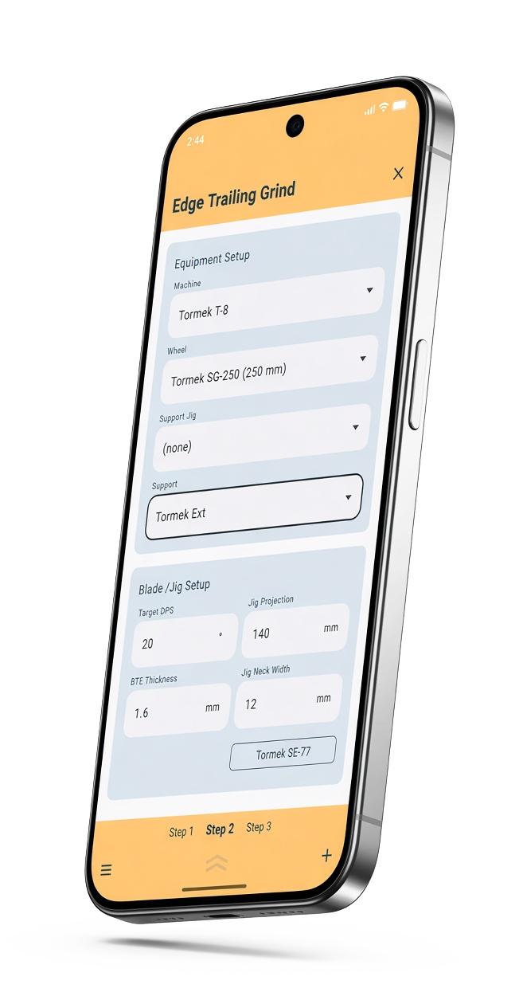
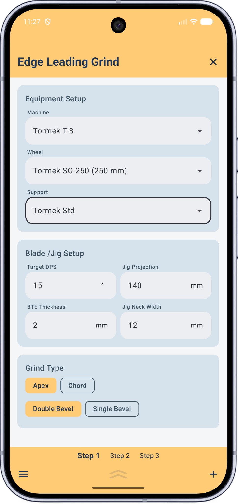
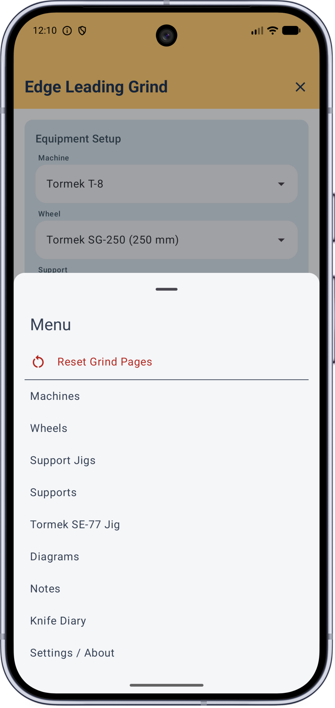
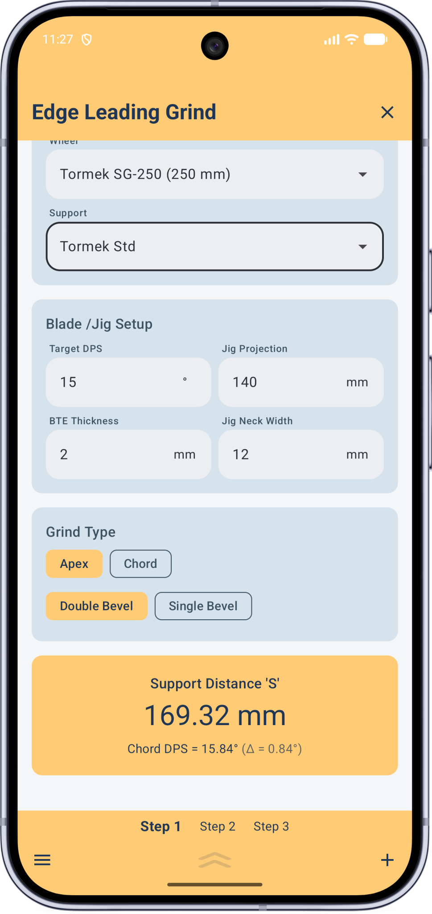
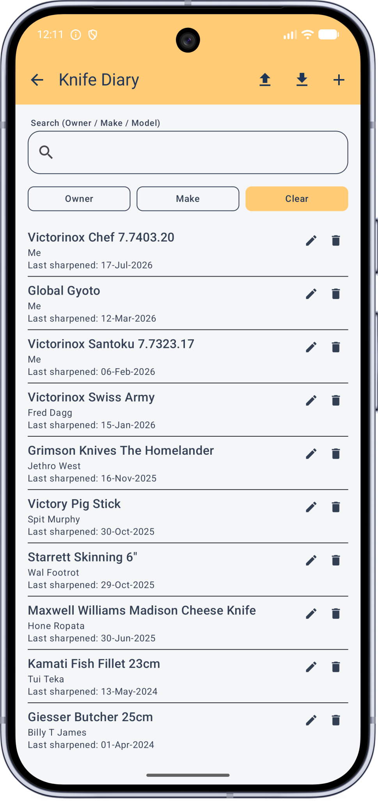

Your jigs. Your steps. Measured, not guessed.
That's JigSteps — plan up to five steps of a multi-stage grind, across whatever powered machines and jigs you own, and get the exact support height for every one, before you start.

JigSteps: Precision and utility.
If you sharpen freehand — this app isn't for you. But if you've invested in jig-based powered grinding equipment, you've already decided speed and precision matter. So why is the one number that actually sets your edge angle — where the support sits — still left to guesswork, a gauge, or an app limited to one grinder or one grind step?
JigSteps doesn't stop at one grinder, or one step. Enter your actual equipment — machine, wheel, jig, support — once, properly, and JigSteps calculates the exact support distance for every grind step you plan, on any combination of gear you own. Setting up your equipment library is the only 'hard' part.
JigSteps is built around the Tormek T-8, but works with any wheel-type grinder sharing some, or similar, geometry — flat-type grinders are supported too. Your blade and jig setup stays locked across every step in a sequence, so a multi-stage grind stays consistent from start to finish.
Three things, in order:
Enter your equipment once
Machines, wheels, support jigs, and supports — measured once, stored for good. Every field is explained with a diagram, so there's no guessing what to measure.
Build your grind steps
Up to five steps per job, each any valid combination of your equipment. Choose edge-leading or edge-trailing, support jig or not, apex or chord angle, single or double bevel.
Get your support distance
JigSteps calculates the exact support distance for each step, and warns you clearly if your setup would sit the support too high or too low before you start — a useful reality check.
A closer look




Everything a sharpening companion should be
Any wheel-type or flat-type grinder
Built around the Tormek T-8, but works with any wheel-type grinder sharing some, or similar, geometry — flat-type grinders are supported too.
Edge Leading or Edge Trailing
Every grind step is sequentially set up as one or the other, matched to how your equipment is actually used.
Full equipment library
Machines, wheels, support jigs, and supports — any valid combination, any number of items.
Guided setup, with diagrams
Equipment fields link to a diagram where necessary, showing exactly what to measure — no guesswork about what a number means.
Editable wheel diameter, on the fly
Bonded wheels wear with use — adjust the diameter directly from the grind step page, no trip back to the menu needed.
Tormek SE-77 jig support
Built-in geometry for the SE-77 chisel / plane-iron jig, on both wheel and flat-type grinders.
Apex & Chord, side by side
Grind to whichever angle type you prefer, and see the other for comparison — with the difference between them. Useful for thick blades.
Support warnings built in
Clear too-high / too-low warnings before you grind, and a gentle nudge if your Tormek Ext support would work better.
Knife Diary
Log every knife you sharpen — owner, make / model, material, hardness, BESS scores, angle, setup and more. Export or import via CSV.
Metric or Imperial
Work in mm or inches, with a period or comma decimal separator — your choice, everywhere in the app.
✓You own it. No subscription.
Buy once, keep it — free minor updates and bug fixes included, for good. Major upgrades are separate, but there's no ongoing fee, ever.
✓Local only. Nothing collected.
JigSteps runs entirely on your phone — no data collection, no tracking, no accounts. The only thing it ever talks to is the Play Store, for update notifications.
Want early access?
JigSteps is heading into closed testing on Google Play before its full public launch. We're looking for around 15 keen people to help us out. If you're selected as a tester, Google Play will make JigSteps available to install directly from your own Play Store app — no separate files, nothing to sideload.
✓What to expect
Testing happens entirely through the real Google Play Store — you won't be emailed an app file to install. Once you're added as a tester, Play will show JigSteps in your own Play Store app, and you install it from there like any other app. Nothing unusual, nothing to sideload.
✓Timing
There's a short gap between applying and being able to install — testers need to be added to the list first, and access takes a little time to activate on Google's side. We'll email you as soon as you're set up and ready to install.
To apply, send us the details below and we'll be in touch:
Apply for beta testing